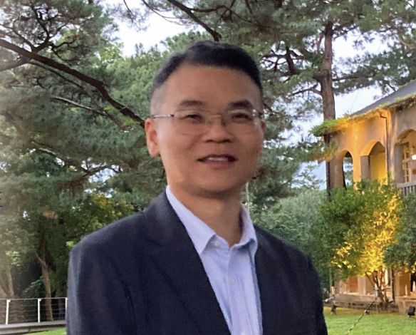

Currently in Office · 現任
Wang Chien-Kai
王建凱 校長
- Order
- 17th Principal · 第 17 任校長
- Took office
- August 2023 · 民國 112 學年度
- Predecessor
- Lee Shih-Hsun 李世勳 (2015–2023)
A school at the foot of the mountain has two compasses — the hills behind us, and the children walking toward us. Our job at Dongshan is to make sure those two never lose sight of each other.
山腳的學校有兩個方位——身後的山，與走來上學的孩子。我們在東山的任務，是讓這兩件事永遠不要彼此走散。